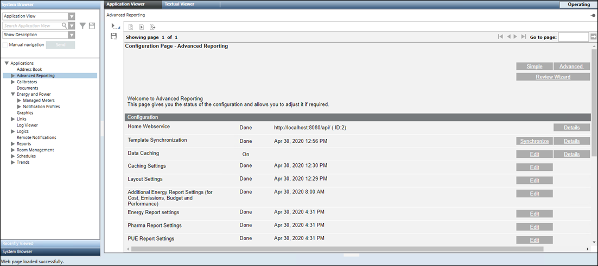
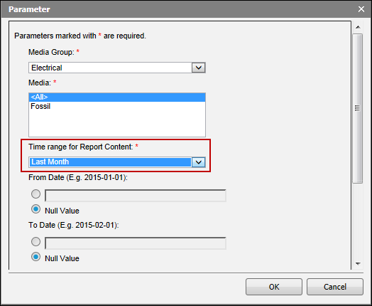

Energy Reports Workspace
The Energy Reports Workspace provides information on the UI components for configuring energy reports.

To work with Energy reports, you must perform the advanced configurations such as data caching settings, layout settings, and look and feel of report elements. Additionally, you can further configure advanced settings for reports such as consumption budget, PUE, Emissions, and so on from the Configuration Page.
Advanced Configuration | |
Name | Description |
Home Webservice | URL of the management station web services that updates the WSI URL in all the report templates provided by the management station. (see Configure the URL for Web Services in Installing and Configuring Advanced Reporting.) |
Template Synchronization | Date and time when the report templates were transferred to the Tomcat server. (see Synchronize Advanced Reporting Templates in Installing and Configuring Advanced Reporting.) |
Synchronize | Deploys the report templates from the library to the Tomcat server. |
Data Caching | Allows you to configure the parameters for data caching. |
Caching Setting | Allows you to configure the caching settings. |
Layout Setting | Allows you to configure the layout of the report. |
Additional Energy report settings (for Cost, Emissions, Budget, and Performance) | Allows you to configure additional parameters for the energy reports. |
Allows you to configure the look and feel of the elements of a report. | |
Applicable only for the PUE Report. Allows you to configure the settings for the PUE report. | |
Edit | Displays the Parameter dialog box that allows you to configure the settings. |
Details | Displays the details of the applied settings. |
Time Range Parameters in Report Content
When you select an object in the System Browser that meets the criteria specified in the display rule, the report corresponding to the selected object displays. You can specify the time range for the data to be displayed in the report by specifying the respective values in the Time range for Report Content drop-down list of the Parameter dialog box.

Time range for Report Content Parameters | ||
Item | Description | Example |
Last Week | Displays the data generated till the last date of the immediately preceding week. | For a report generated on 2017-04-06, data from 2017-03-26 through 2017-04-01 displays (considering the first day of the week according to your regional settings is Sunday). |
Last Month | Displays the data generated till the last date of the immediately preceding month. | For a report generated on 2017-04-06, data from 2017-03-01 through 2017-03-31 displays. |
Last Quarter | Displays the data generated till the last date of the immediately preceding quarter. | For a report generated on 2017-04-06, data from 2017-01-01 through 2017-03-31 displays. |
Last Year | Displays the data generated till the last date of the immediately preceding year. | For a report generated on 2017-04-06, data from 2016-01-01 through 2016-12-31 displays. |
Rolling Week | Displays the data for a period of one week from the immediately preceding date on which the report is generated. | For a report generated on 2017-04-06, data from 2017-03-30 through 2017-04-05 displays. |
Rolling Month | Displays the data for a period of one month from the immediately preceding date on which the report is generated. | For a report generated on 2017-04-06, data from 2017-03-06 through 2017-04-05 displays. |
Rolling Quarter | Displays the data for a period of one quarter from the immediately preceding date on which the report is generated. | For a report generated on 2017-04-06, data from 2017-01-06 through 2017-04-05 displays. |
Rolling 100 Days | Displays the data for a period of 100 days from the immediately preceding date on which the report is generated. | For a report generated on 2017-04-06, data from 2016-12-27 to 2017-04-05 displays. |
Rolling 200 Days | Displays the data for a period of 200 days from the immediately preceding date on which the report is generated. | For a report generated on 2017-04-06, data from 2016-09-18 through 2017-04-05 displays. |
Rolling Year | Displays the data for a period of 1 year from the immediately preceding date on which the report is generated. | For a report generated on 2017-04-06, data from 2016-04-06 through 2017-04-05 displays. |
Current Week | Displays data for the current week. | For a report generated on 2017-04-06, data from 2017-04-02 through 2017-04-08 displays. |
Current Month | Displays data for the current month. | For a report generated on 2017-04-06, data from 2017-04-01 through 2017-04-30 displays. |
Current Quarter | Displays data for the current quarter. | For a report generated on 2017-04-06, data from 2017-04-01 through 2017-06-30 displays. |
Current Year | Displays data for the current year. | For a report generated on 2017-04-06, data from 2017-01-01 to 2017-12-31. |
One year from same Week Last Year | Displays the data for a period of one year from the date on which the report is generated. The one year period starts with the first day of the week of the immediately preceding year and ends with the last day of the week. | For a report generated on 2016-09-06, data from 2015-09-04 through 2016-09-03 displays. |
One year from same Month Last Year | Displays the data for a period of one year from the date on which the report is generated. The one year period starts with the first day of the month of the immediately preceding year and ends with the last day of the month. | For a report generated on 2016-09-06, data from 2015-09-01 through 2016-08-31 displays. |
One year from same Quarter Last Year | Displays the data for a period of one year from the date on which the report is generated. The one year period starts with the first day of the quarter of the immediately preceding year and ends with the last day of the quarter. | For a report generated on 2016-09-06, data from 2015-07-01 through 2016-06-30 displays. |
2 weeks Ago | Displays the data for the last two weeks not considering the current week. | For a report generated on 2017-04-06, data from 2017-03-19 through 2017-04-01 displays. |
2 Months Ago | Displays the data for the last two months not considering the current month. | For a report generated on 2017-04-06, data from 2017-02-01 through 2017-03-31 displays. |
2 Quarters Ago | Displays the data for the last two quarters not considering the current quarter. | For a report generated on 2017-04-06, data from 2016-10-01 through 2017-03-31 displays. |
2 Years Ago | Displays the data for the last two years not considering the current year. | For a report generated on 2017-04-06, data from 2015-01-01 through 2016-12-31 displays. |
Auto Interval in Load Profile and Max Power Reports
When working with the Load Profile and Max Power reports, if you enter Auto into the Interval field, then the interval for which the data is aggregated and displayed in the report depends on the specified time range. The following table provides information on the intervals depending on the time range.
Load Profile Report | |
Specified Time Range | Intervals for which the data is aggregated and displayed |
Greater than or equal to a day and less than or equal to 3 months | One hour |
Greater than 3 months and less than or equal to 12 months | Half day |
Greater than 12 months | Day |
Max Power Report | |
Specified Time Range | Intervals for which the data is aggregated and displayed |
Greater than or equal to a week and less than or equal to a month | Day |
Greater than a month and less than or equal to 12 months | Week |
Greater than 12 months | Month |